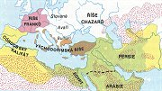
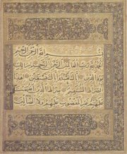
První strana Koránu
|
ARABSKÉ PÍSEMNICTVÍ
Køes�anská Evropa vidìla v muslimech nebezpeèí u� od nejstarších dob. Brzy po vzniku arabské øíše ji toti� zaèali ohro�ovat svımi vojenskımi vıpady. Nic na tom nemìní skuteènost, �e byli k obyvatelùm dobytıch územích èasto tolerantnìjší ne� køes�ané. Muslimové se dostali a� na Sicílii a Pyrenejskı poloostrov a hrozilo, �e postoupí dál. Naštìstí je v roce 732 zastavil Karel Martel v bitvì u Poitiers. Z dnešního Španìlska ovšem byli muslimové vytlaèeni a� v roce 1492. Mezitím se pape� rozhodl osvobodit od tìchto „barbarù" Svatou zemi (Jeruzalém s Bo�ím hrobem), ale køí�ové vıpravy byly nakonec neúspìšné. Ani dnes nejsou vztahy mezi køes�anskım Severem a muslimskım Jihem ideální. Vidíme hlavnì civilizaèní rozdíly mezi obìma kulturami a zapomínáme na to, co nám tato kultura dala. Jsou to napøíklad arabské èíslice, které dennì pou�íváme, velikáni jako lékaø Ibn Síná (980-1037) neboli Avicenna èi filozof Ibn Rušd (1126-1198) neboli Averroes, velcí znalci Aristotela, nádherné stavby a také literární díla (milostné básnì, pohádky, nábo�enské texty).
|
Historie
Arabskı poloostrov osídlily semitské kmeny u� ve 3. tis. pø.n.l. a v 6. stol. pø.n.l. zde zaèaly vznikat první státní útvary. Zakladatel islámu Muhammad (†632 n.l.) zároveò sjednotil všechny semitské kmeny Arabského poloostrova a polo�il základy velké arabské øíši. Jeho nástupci vtrhli do okolních zemí a postupnì získali obrovské území, které na západì sahalo pøes Egypt a severní Afriku a� na Pyrenejskı poloostrov a na vıchodì se rozprostíralo od bıvalé Mezopotámie a Persie a� k hranicím s Indií. Na vìtšinì tìchto území je dodnes islám hlavním nábo�enstvím.
|
|
Muhammad (570-632 n.l.) se pova�oval za dovršitele èinnosti starozákonních prorokù a Je�íše, posledního proroka a posla Alláhova. Na rozdíl od Moj�íše nebo Je�íše nebyl obdaøen nadpøirozenımi schopnostmi a nekonal �ádné zázraky, pøesto se mu podaøilo zalo�it nové nábo�enství. Narodil se v Mekce, ale musel ji opustit, proto�e tamìjším obyvatelùm se nelíbily názory, které hlásal, a dokonce mu usilovali o �ivot. Muhammadùv odchod do oázy Jathrib (pozdìjší Mediny, tj. Mìsta Prorokova) nazıvanı hid�ra byl pova�ován za tak vıznamnou událost, �e bylo jeho datum 24. záøí 622 pozdìji stanoveno jako poèátek muslimského letopoètu. V Medinì byl Muhammad úspìšnìjší. Získal zde velkı vliv, a proto�e tato oáza le�ela na obchodní stezce mezi Mekkou a Sırií, rozhodl se, �e zaène pøepadávat karavany, aby poškodil Mekku a získal majetek pro muslimy. Nakonec došlo k nìkolika válkám mezi obìma mìsty, které skonèily triumfální poutí Muhammada a dalších muslimù do Mekky k posvátné Kaabì. Muhammad ve vıbojích pokraèoval a dostal celı Arabskı poloostrov pod nadvládu muslimù.
|
Korán (7. stol. n.l.)
Korán (Pøednášení) je posvátnou knihou muslimù. Tvoøí ho 114 súr (kapitol), které pronesl prorok Muhammad v posledních 20 letech svého �ivota. Jeho stoupenci si tyto súry zapsali nebo zapamatovali a 20 let po Muhammadovì smrti je uspoøádali do závazného textu, kterı u� dále nemìnili. Korán je tedy jedno z mála nábo�enskıch dìl, jeho� autorem byl jedinı èlovìk a které bylo sepsáno bezprostøednì po smrti svého tvùrce.
Muhammad znal nìkteré biblické pøíbìhy a zámìrnì je v Koránu pou�il, aby ukázal, �e navazuje na �idovské proroky i Je�íše. Vystupuje zde Moj�íš, Abraham, David, Šalomoun, Goliáš, Job, Jonáš, Josef a další starozákonní postavy. Z nadpøirozenıch bytostí tu kromì andìlù (Gabriel) a satanù mù�eme narazit i na arabské d�iny. Zvláštní postavení má v Koránu Je�íš. Muhammad sice uznává, �e byl prorokem, ale popírá jeho bo�ství. Všechny pøevzaté pøíbìhy mají ilustrovat Alláhovu všemohoucnost nebo mají bıt zdrojem mravního ponauèení.
V èem se liší po�adavky v ukázce z Koránu od biblického Desatera?
Vyber si jednu ze zásad a napiš o jejím porušení mravouènı pøíbìh.
|
Súry
Jednotlivé súry pronesené Muhammadem nebyly v Koránu seøazeny podle èasové nebo tematické návaznosti, ale formálnì od nejdelších k nejkratším. Súry byly slo�eny v rımované próze, její� jednotlivé „verše" mají znaènì odlišnou délku. Nìkteré tvoøí jen pár slov, jiné i 15 øádkù arabského textu. Poèet veršù v súrách se pohybuje od 2 do 286 a jsou graficky oddìleny obrázkem drobného kvítku. Ka�dou súru uvádí formule „Ve jménu Boha milosrdného, slitovného". Navíc je doplnìna názvem, kterı se bohu�el vìtšinou nevztahuje k jejímu obsahu, záhadnou kombinací písmen a poøadovım èíslem. Orientace v Koránu tedy není právì snadná.
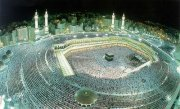
Kaaba v Mekce byla uctívána dlouho pøed vznikem islámu. Jde o kostku, ve které je ukryt kámen meteorického pùvodu. Muslimové Kaabu rituálnì obcházejí.
|
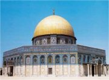
Mešita v Jeruzalémì je po Kaabì v Mekce a Muhammadovì hrobu v Medinì tøetím nejposvátnìjším místem muslimù.
Co pova�uješ na islámu za pozitivní a co za negativní? Nacházíme tyto jevy i jinde?
|
Islám
Islám je monoteistické nábo�enství. Muslimové vìøí v jediného boha – Alláha, Muhammad je pova�ován za jeho posla, prostøednictvím kterého byl Arabùm seslán Korán. Hlavní po�adavky kladené na vìøící jsou pravidelné modlitby (5x dennì), almu�na (vlastnì nábo�enská daò), tøicetidenní pùst a èetba Koránu v mìsíci ramadánu, pou� do Mekky k posvátné Kaabì, zákaz lichvy a po�ívání alkoholu a vepøového masa. Islám povoluje mnoho�enství(4 �eny).
Muslimské pøedstavy o posmrtném �ivotì vycházejí z Bible. Kdy� nastane konec svìta a následné vzkøíšení, dostanou se lidé buï do ráje (d�anna), nebo do pekla (d�ahannam). Pokud se dr�eli správné víry a konali dobré skutky, èeká je odmìna v rajské zahradì, kde kupodivu protéká také øeka vína, mohou hledìt na tváø bo�í, nikdo nikoho nepomlouvá ani nevede prázdné øeèi atd. Spornım bodem je víra, �e do ráje se dostane muslim, kterı zemøe ve svaté válce (d�ihád) pøi šíøení islámu.
|
Sunnité a šíité
Brzy po Muhammadovì smrti se muslimská obec rozdìlila na sunnity a šíity. Sunnité uznávají kromì Koránu také sunnu (tradici, která zahrnuje hadíthy, co� jsou spisy o poèátcích muslimské obce) a jsou pøevládajícím proudem islámu. Šíité (pøívr�enci Alího) uznávali za hlavu muslimské obce pouze potomky Muhammadova zetì chalífy Alího. Toto pùvodnì politické hnutí ale nebylo pøíliš úspìšné a rozpadlo se do mnoha sekt. Navázali na nì pøedevším súfijci – muslimští mystikové.
|
Arabská poezie
Poezii šíøili profesionální recitátoøi ráwijové. Z orientálních básnickıch forem byla oblíbená zejména kasída (báseò vìnovaná mecenáši umìní) a gazel (báseò perského pùvodu s jedinım rımem). Po vítìzství islámu se prosazuje duchovní lyrika a zároveò zaèíná pronásledování jeho odpùrcù. Autoøi opìvující pití vína èasto konèili ve vyhnanství nebo byli pro vıstrahu zbièováni. Arabská milostná lyrika ovlivnila støedovìkou dvorskou poezii na jihu Evropy.
|
Antara ibn Šaddád
Pøedislámskı básník Antara ibn Šaddád (Antar) �il v 6. století. Tento otrok byl natolik populární, �e o jeho �ivotì a tvorbì vzniklo obsáhlé lidové vyprávìní nazvané Román o Antarovi, které obsahuje i básníkovy verše.
|
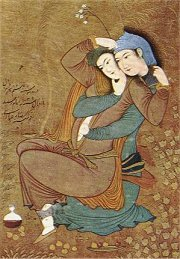
Milenci
|
Kasída
Kasída vznikla pøibli�nì v 6.stol. n.l. Šlo o ustálenou formu, která mìla tøi èásti – nasíb (báseò zaèínala zmínkou o opuštìném le�ení a melancholickou vzpomínkou na milovanou osobu), wasf (popis cesty pouští plné nebezpeèí a vìrné velbloudice) a madh (chvála mecenáše, nìkdy i oslava sebe samého). Básník v kasídì líèí, co všechno musel podniknout, aby se dostal ke svému chlebodárci.
|
Zuhair ibn Abí Sulmá chválí Sinána
Pøedislámskı básník Zuhair ibn Abí Sulmá proslul jako autor mu’allakát a kasíd.
|
Pokus se napsat vlastní kasídu.
|
Tisíc a jedna noc
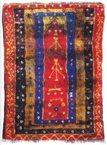
Tento koberec je modlitební, v arabskıch pohádkách se ale vyskytují spíše koberce létací.
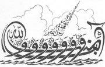
Kaligrafickı nápis
Hod�a Nasreddin (D�uhá)
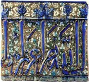
Kachel s úryvkem z Koránu
|
Tisíc a jedna noc
Tato rozsáhlá sbírka pohádek, bajek, povídek a dalších pøíbìhù rùznıch �ánrù je zalo�ena na geniální zápletce. Král Šahriján se rozhodne, �e ka�dou svou man�elku ihned po svatební noci popraví. Po tøech letech si vezme za �enu vezírovu dceru Šahrazád, která mu zaène vyprávìt zajímavı pøíbìh. Dùvtipná Šahrazád ale skonèí v nejlepším a napjatı král nechce pøijít o zajímavé rozuzlení, a proto ji nechá �ít. Další noc se vše opakuje. Šahrazád pøedchozí pøíbìh dokonèí, ale z vypravování vyplyne další zajímavá zápletka. Šahriján u� se nemù�e doèkat nové noci, a tak Šahrazád pøe�ije další tıdny, mìsíce a roky, a� král své nesmyslné naøízení koneènì zruší. Mezi pøíbìhy se objevují známé pohádky Alibaba a ètyøicet loupe�níkù, Aladinova lampa, Sindibád…
Pokus se pøíbìh dokonèit. Potom své vypravování srovnej s druhım dnem Tisíce a jedné noci.
Hod�a Nasreddin (D�uhá)
Hlavním hrdinou mnoha lidovıch vyprávìní a anekdot byl šibal a podvodníèek, jeho� jméno mìlo stát od státu jinou podobu. Nejznámìjší variantou byl tureckı Hod�a Nasreddin a arabskı D�uhá. Nìkdy jeho moudrost a drzost uvádìla do rozpakù i samotného sultána, jindy ji Nasreddin zneu�íval, aby se obohatil na úkor obyèejnıch lidí...
|
Kniha Tisíc a jedna noc zahrnuje pøíbìhy, které vznikly v nejrùznìjších zemích a kulturách. Jádrem bylo indické Velké vyprávìní, které se bohu�el nedochovalo, ale èerpal z nìj anonymní autor Paòèatantry (Patero ponauèení), �ijící v 5. stol. n.l., nebo Sómadéva v Oceánu pøíbìhù. Základem tìchto dìl je rámcovı pøíbìh. Do nìj je volnì zakomponováno obrovské mno�ství samostatnıch bajek, pohádek a povídek, které vyprávìjí rùzné postavy a které se k rámcovému dìji vztahují velmi volnì nebo vùbec. Tyto pøíbìhy byly velmi populární nejen v Indii, ale i dalších zemích. Peršané øadu indickıch pøíbìhù pøelo�ili a zakomponovali je do sbírky Hazár afsána (Tisíc vyprávìní), která u� obsahovala základní rámcovı pøíbìh o králi, jen� dal popravit svou �enu, jakmile s ní strávil jedinou noc. Chytrá Šírázád ale svùj ortel oddaluje tím, �e králi vypráví pøíbìhy. V 8. stol. n.l. bylo toto dílo pøelo�eno do arabštiny a rozšíøeno o další pøíbìhy. První zmínky o sbírce Alf lajla wa lajla (Tisíc a jedna noc) pocházejí z 12. stol. z Egypta. Její koneèná podoba se ale ustálila a� v 18. století.
Znáš jiné postavy, které jsou velmi blízké Nasreddinovi?
|
Arabská kaligrafie
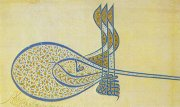
Kaligrafickı podpis
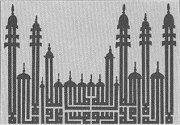
Islámské vyznání víry (Není boha kromì Boha a Muhammad je Posel Bo�í.) v podobì minaretù.
|
Jazyk a písmo
Arabština patøí mezi semitské jazyky, je tedy pøíbuzná s hebrejštinou. Arabské písmo vzniklo z písma aramejského, ale bylo znaènì nedokonalé, proto�e nemìlo znaky pro nìkteré samohlásky a pro více souhlásek pou�ívalo pouze jeden znak. A� v 8. stol. n.l. se podaøilo tyto nedostatky napravit. I tak ale existuje sedm povolenıch rùznoètení Koránu. Nejvíce respektované je kanonické egyptské vydání z roku 1923, které vzniklo na pùdì káhirské univerzity al-Azahar. Korán zakazuje zobrazovat Alláha i Muhammada. Muslimové proto pou�ívají jako dekorativní vızdobu v mešitách ozdobné písmo a stylizovanımi nápisy zdobí i pøedmìty bì�né denní potøeby (talíøe). Tyto kaligrafie vìtšinou obsahují jméno Alláhovo nebo citáty z Koránu. Arabové píší zprava doleva.
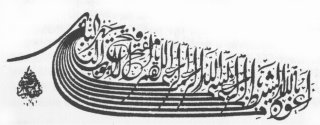
Chvalozpìv na Alláha v podobì bárky
|
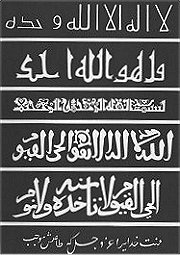
Kaligrafické nápisy
|
Internetové stránky
Muslim inform
Muslim, informace, obrázky...
Islámská nadace v Praze
Bible a Korán
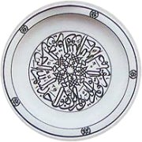
Talíø s kaligrafickım nápisem
Co si myslíš o muslimech? Proè?
Odkud o nich èerpáš informace? Jsou objektivní?
Navštívil/a jsi nìkterou z islámskıch zemí? Proè?
Byl/a jsi v mešitì? Jak na tebe pùsobila?
|
Doporuèená èetba
Avicena: Z díla, pøel. Kubíèková, Petráèek, Praha 1954
Cestou karavan, pøel. K.Petráèek, Èeskoslovenskı spisovatel, Praha 1975
D�bán �íznì, Stará arabská poezie, pøel. Drozdík, Štroblová, Mladá fronta, Praha 1966
Grube, E.J.: Islámské umìní, pøel. K.Benda, Artia, Praha 1973
Hrbek, Petráèek: Muhammad, Orbis, Praha 1967
Katalog arabskıch rukopisù z Národní knihovny Èeské republiky, Dar Ibn Rushd, Praha 2001
Korán, pøel. I.Hrbek, Odeon, Praha 1991
Kropáèek, Luboš: Duchovní cesty islámu, Vyšehrad, Praha 1993
Nasreddinovy taškaøice
Oliverius, Jaroslav: Svìt klasické arabské literatury, Atlantis, Praha 1995
Petiška, Eduard: Pøíbìhy tisíce a jedné noci, Melantrich, Praha 1986
Petráèek, Karel: Básníci pouštì, Arabská poetika devíti století, Èeskoslovenskı spisovatel, Praha 1977
Robinson, Francis: Svìt islámu, Kni�ní klub, Praha 1996
Román o Antarovi, pøel. J.Štroblová, Praha 1968
Slova mystika al-Hallád�e, Myšlenky súfismu, pøel. A.Mrázková, Vyšehrad, Praha 2002
Solovjov, Leonid: Nasreddinova dobrodru�ství
Šprımy hod�i Nasr-ed-dina efendiho
Tauer, F.: Svìt islámu, Vyšehrad, Praha 1984
Tisíc a jedna noc (5 dílù), pøel. F.Tauer, Odeon, Praha 1973
Tucet tváøí Nasreddinovıch, pøel. M.Mendel, Vyšehrad, Praha 1990
Z vyprávìní Šahrazádinıch, pøel. F.Tauer, Odeon, Praha 1967
|
Pøiprav si referát o nìkteré z uvedenıch knih nebo internetovıch stránek.
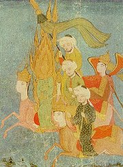
Proto�e islám zakazuje zobrazovat Alláha i jeho proroka, nevidíme na obrázku Muhammadovu tváø.
Tipy
Na vydávání pøekladù z arabštiny se specializuje nakladatelství Dar Ibn Rushd.
|
|